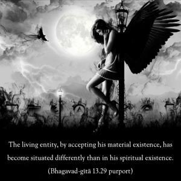
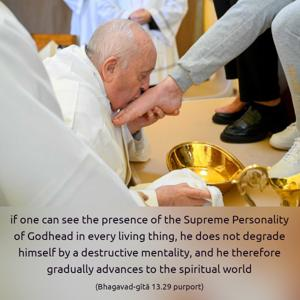
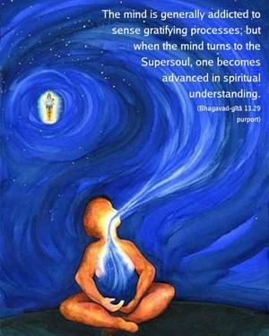

One who sees the Supersoul equally present everywhere, in every living being, does not degrade himself by his mind. Thus he approaches the transcendental destination.



The living entity, by accepting his material existence, has become situated differently than in his spiritual existence. But if one understands that the Supreme is situated in His Paramātmā manifestation everywhere, that is, if one can see the presence of the Supreme Personality of Godhead in every living thing, he does not degrade himself by a destructive mentality, and he therefore gradually advances to the spiritual world. The mind is generally addicted to sense gratifying processes; but when the mind turns to the Supersoul, one becomes advanced in spiritual understanding.